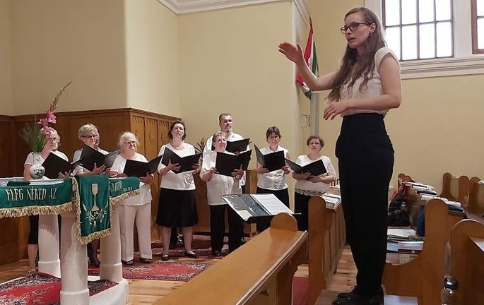

2020
Web-Entwickler Kurs
Online Unterrichte, 30 Stunden
Ausgezeignetes Ergebnis

Hallo! Ich bin Eszter, 25 Jahre alt, und wohne seit 2019 in München, Nymphenburg. Als ich herzog habe ich mich sofort als Verkäuferin engagiert: zuerst im Taxisgarten was am meisten Spaß gemacht hat, und danach bei Max Rischart's Backhaus wo mich angenehm organisierte Bedingungen erwarteten.
Währen den letzten paar Monaten habe ich einen online IT Kurs belegt, und nach der englischen endlich auch eine deutsche Sprachprüfung besorgt. Zurzeit bin auf der Suche nach einem Job der mich und mein Talent etwas mehr herausfordert.
Ich kann mit Arbeitsbelastung umgehen: Während meiner Zeit auf der Uni habe ich gelernt strukturiert zu arbeiten. Ich denke viel darüber nach wie ich zeitaufwändige Aufgaben systematisch angehen kann, und wie ich die Last effektiv verteilen kann. Als Bächelor von Grundschulpädagogik bin ich darauf trainiert Lernaufgaben spielerisch zu betrachten, und komme aus Erfahrung gut mit Kleinkindern zurecht.
Ich bin zuverlässig und diszipliniert: Als Kantorin habe ich gelernt pünktlich und genau zu arbeiten. Eine Messe darf nicht spät anfangen, und die Lieder müssen immer eindeutig geklärt sein. Ich habe regelmäßig vor mehr als hundert Menschen gespielt, und ich habe neulich auf einer Hochzeit ein Konzert gegeben. Mein Lampenfieber ist daher nur mildejetzt nur noch milde.
Ich bin fähig meinen Willen durchzusetzen: Als Chorleiterin habe ich in 8 Jahren lernen müssen Authorität auszuüben, weil ein Chor ohne Kontrolle bloß ein Freundeskreis ist. Ich habe nichts gegen einen Freundeskreis, aber wenn der Freundeskreis einem Konzert verpflichtet, und ich verantwortlich bin, dann muss Ordnung sein.
Ich arbeite gut im Team: Bei Max Rischart's hat man mich nach wenigen Tagen bereits für meine schnelle und schöne Arbeit gelobt. Ich habe Neukömmlinge sehr gerne in ihren ersten Tagen betreut, und die Arbeitszeit verlief auch an verkehrsreichen Tagen in guter Laune, was die Kunden natürlich auch schätzen.
Web-Entwickler Kurs
Online Unterrichte, 30 Stunden
Ausgezeignetes Ergebnis
Deutsche Sprachprüfung
Goethe Zertifikat B2
Ausgezeignetes Ergebnis
Musikfachschule
Kirchenmusik Fach
Kodály Zoltán Chorschule, Budapest
Englische Sprachprüfung
TELC Englisch B2
Ausgezeignetes Ergebnis
Bachler Diplom
Grundschullehrerfach
ELTE Universität, Budapest
Ich habe bei Max Rischart’s Backhaus im Ostbahnhof als Verkäuferin von Mitte November bis in Mitte Mai (trotz Einschränkungen) gearbeitet. Meine Aufgabe war es die feinsten Backwaren schön einzupacken, die Kasse zu behandeln und Bestellungen aufzunehmen. Ich habe die Kunden nett betreut und konnte mit meinen Mitarbeitern gut zusammenarbeiten. Der Ostbahnhof ist der verkehrsreichste Bahnhof in München, deswegen lernte ich schnell und pünktlich zu arbeiten.
Im Juli 2019 bin ich nach München gezogen, und habe kurzfristig einen Job als Kassenhilfskraft im Taxisgarten erworben. Die Arbeit war saisonal und mein Vertrag dauerte bis Ende Oktober. Das Team im Taxisgarten war sehr freundlich und hilfsbereit trozt meinen anfangs fehlenden Deutschkentnissen. Während meiner Zeit im Biergarten habe ich viele schöne Erinnerungen gesammelt!
Chor
Seit Oktober 2015 war ich gleichzeitig Kantorin und alleinige Chorleiterin der Evangelischen Gemeinde Csillaghegy in Budapest. In der Gemeinde habe ich im Jahr 2018 im Kauf einer neuen Orgel signifikante Arbeit zugetragen: Preisanfragen erstellt, technische Eigenschaften und Klang von ähnlichen Orgeln im Umkreis verglichen, Kontakte gehalten, und das Musikalische Leben auf höheres Niveau gesetzt.
Ich bin Mitgründerin und Mitchorleiterin eines kleinen zwölfköpfigen Kammerchors namens „Schwalbe“. Wir sind nicht nur Mitglieder, sondern auch Freunde. Auf unseren bisherigen Konzerten haben wir sehr positive Rückmeldungen erworben.